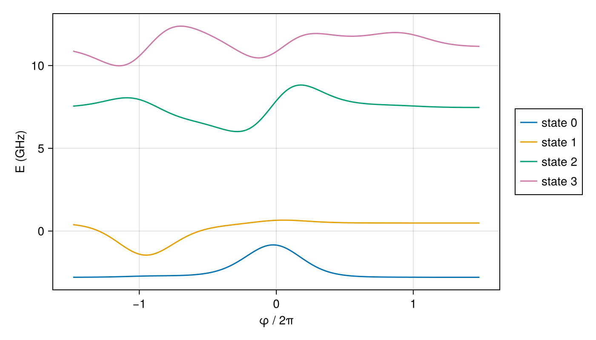

Wavefunctions
phase_wavefunction and charge_wavefunction return the kept states of a leaf as function values in the phase or the charge representation. The convention is ⟨φ|n⟩ = e^{inφ}/√2π, the one the port operators already use (e^{ikφ}|n⟩ = |n+k⟩, n = -i∂_φ).
One mode
A fluxonium on a phase grid, and the same fluxonium in a Fock basis:
using KronFreeCircuits, CairoMakie
spec = load_spec("fluxonium.json")
θ = (E_J=8.9, E_C=2.5, E_L=0.5, varphi_ext=2.0)
leaf = Node([:varphi_1 => PhaseGrid(-10π, 10π, 601)]; keep=lowest(5))
sys = materialize(leaf, spec, θ)
φ, ψ = phase_wavefunction(sys) # ψ[:, i] = ψ_i(φ) on the grid, Δφ Σ|ψ|² = 1
n, ψn = charge_wavefunction(sys) # ψn[:, i] = ψ̃_i(n) at n_k = 2πk/(NΔφ), Δn Σ|ψ̃|² = 1
fock = Node([:varphi_1 => FockBasis(200; phi_zpf=(2 * 2.5 / 0.5)^0.25)]; keep=lowest(5))
sysF = materialize(fock, spec, θ)
_, ψF = phase_wavefunction(sysF, φ) # a Fock basis has no grid: pass the points
_, ψnF = charge_wavefunction(sysF, n)
maximum(abs, ψF .- ψ), maximum(abs, ψnF .- ψn)(2.648566921337192e-10, 3.5882808598592814e-10)The two agree to the accuracy of the discretization. Each kept state, offset by its energy:
E = energies(sys)
fig = Figure(size=(700, 400))
ax = Axis(fig[1, 1]; xlabel="φ / 2π", ylabel="E (GHz)")
sel = abs.(φ) .< 3π
for i in 1:4
lines!(ax, φ[sel] ./ 2π, E[i] .+ 3 .* real.(ψ[sel, i]); label="state $(i - 1)")
end
Legend(fig[1, 2], ax)
Both functions also take a basis and a vector or a matrix of column states, phase_wavefunction(basis, V), and a leaf of a larger tree, phase_wavefunction(sys, node).
Several modes
On a leaf with several modes each mode is transformed along its own axis, and the result is a NamedTuple of grids with an array that has one axis per mode and the states last. charge= (on phase_wavefunction) or phase= (on charge_wavefunction) puts the named modes in the other representation, points= gives each FockBasis mode its points, and states= selects kept states.
A zero-pi qubit's (θ, φ) leaf, inside a tree that also holds its decoupled ζ mode:
spec = load_spec("zero_pi.json")
θ = (E_J=10.0, E_L=0.04, E_CJ=20.0, E_CS=0.5, varphi_ext=2π * 0.23, n_g=0.1)
leaf = Node([:theta => ChargeBasis(6), :phi => PhaseGrid(-10π, 10π, 151)]; solver=Dense(), keep=lowest(4))
zeta = Node([:zeta => FockBasis(10; phi_zpf=2.0)]; keep=lowest(2))
sys = materialize(Node([leaf, zeta]; keep=lowest(4)), spec, θ)
grids, ψ = phase_wavefunction(sys, leaf) # θ on 13 phases, φ on 151
size(ψ)(13, 151, 4)grids, ψ = phase_wavefunction(sys, leaf; charge=:theta) # θ in charge (-6..6), φ in phase
grids.theta, (grids.phi[2] - grids.phi[1]) * sum(abs2, ψ[:, :, 1]) # weight 1 per charge, Δφ per phase point([-6.0, -5.0, -4.0, -3.0, -2.0, -1.0, 0.0, 1.0, 2.0, 3.0, 4.0, 5.0, 6.0], 0.9999999999999978)The normalization is the product of the one-mode rules below, with weight 1 on the charges of a ChargeBasis or a PeriodicGrid. A branch node throws: only leaves are supported, since a branch state over several leaves on a full product grid is usually too large to hold. Tutorial: a soft zero-pi qubit plots these two-dimensional wavefunctions, evaluated on a fine θ grid.
Grids and normalization
The values are on the basis's own grid, so nothing is interpolated or oversampled.
| basis | phase | charge |
|---|---|---|
ChargeBasis(ncut), N = 2ncut + 1 | ψ(φ_j) = (1/√2π) Σ_n c_n e^{inφ_j} on φ_j = -π + 2πj/N, the grid of PeriodicGrid(N) | c_n |
PeriodicGrid(N), Δ = 2π/N | v_j/√Δ on its grid | c_ℓ = (√2π/N) Σ_j ψ(φ_j) e^{-iℓφ_j}, integer ℓ |
PhaseGrid(a, b, N), spacing Δ | v_j/√Δ on its grid | ψ̃(n_k) = (Δ/√2π) Σ_j ψ(φ_j) e^{-i n_k φ_j}, n_k = 2πk/(NΔ) |
FockBasis(N; phi_zpf) | Σ_m c_m h_m(φ; φ_zpf) at the points passed | Σ_m c_m (-i)^m h_m(n; n_zpf), n_zpf = 1/(2φ_zpf) |
h_m(x; s) = (2π s²)^{-1/4} (2^m m!)^{-1/2} H_m(x/(√2 s)) e^{-x²/(4s²)} is the oscillator function, and ℓ and k run over -(N-1)/2..(N-1)/2 for odd N and -N/2..N/2-1 for even N. The grid sums are one fast Fourier transform (FFTW), with the grid's origin applied as a phase factor. The oscillator functions come from GSL (gsl_sf_hermite_func_array), which stays accurate at levels and points where the Gaussian factor alone underflows. The fluxonium above agrees between the grid and the Fock basis to 4e-10 in both representations.
Limits:
- The charge resolution of a
PhaseGridis fixed by its window:Δn = 2π/(NΔ)over|n| ≤ π/Δ, about0.1for the grid above. A finer charge grid needs a wider phase window. - A
PhaseGridholds both endpoints, so the transform's period isNΔ, one step more thanb - a. This is harmless for a state that vanishes at the edges of the grid. - The charges of an even-
NPeriodicGridare not those of aChargeBasis, which always has an odd dimension. - A grid basis discretizes
nby finite differences, so the result is the state's representation in charge, not an eigenvector of the Hamiltonian written in a charge basis.